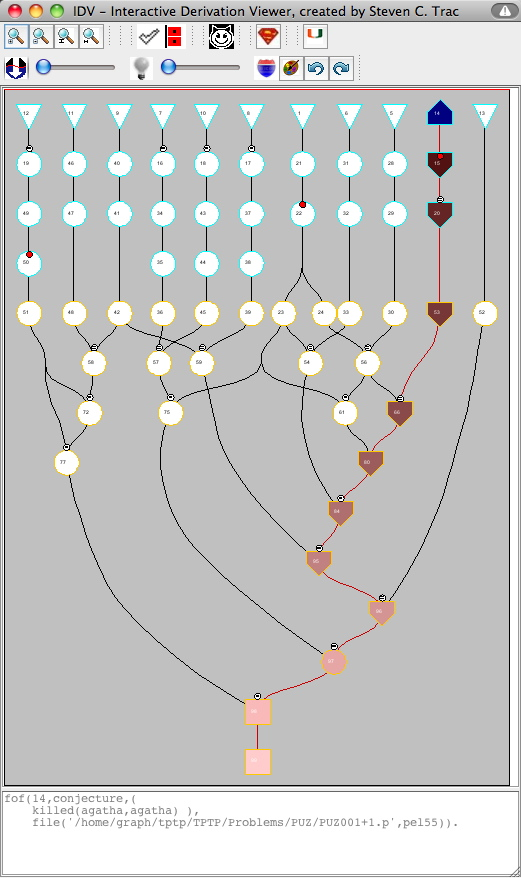

The TSTP Context

TSTP Proofs
- Problems and solutions with FOF axioms
- Converted to PML for processing
- Syntactic well-formedness verified by PML parser
- Comparable proof artifacts
- Consistent use of TSTP format (makes life easy)
- CNF refutations (producing the same artifacts)
- Equivalence oracles
- Modulo symbol renaming and commutativity
- Inference steps ≡ parents and conclusion
Different Proofs
- FOF axioms
- Inferred formulae
- FOF in FOF-to-CNF
- CNF leaves (at end of FOF-to-CNF)
- CNF in proof
- Inference steps
- In FOF-to-CNF
- CNF inference steps